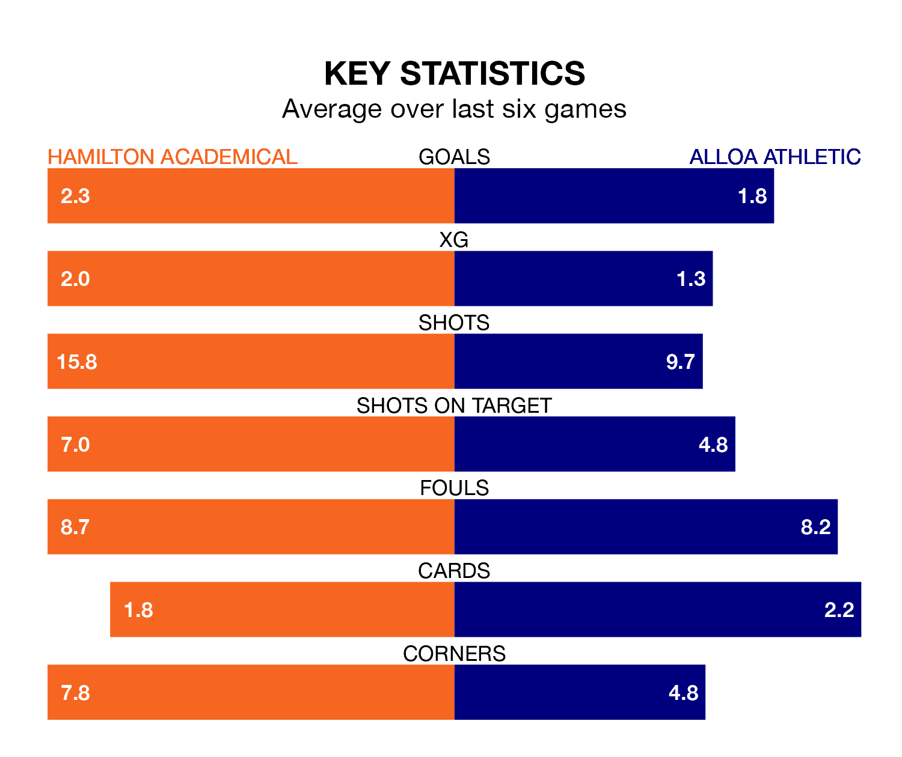

Hamilton Academical host Alloa Athletic in Saturday's match at the Fountain of Youth Stadium looking to bounce back from defeat last time out in League One.
The Accies, who sit second in the league after 24 games, fell to a 3-2 away defeat to Falkirk on February 17.
They face an Alloa side who picked up a win in their last match, a 4-1 victory against Cove Rangers, and who sit third in the table.
With 50 goals in 24 games so far this season, Hamilton Academical are the league's second-highest scorers with 2.1 goals per game. And they are conceding fewer than average, letting in 20 goals at a rate of 0.8 per game.
Alloa, meanwhile, are below average scorers, with 1.5 goals per game, compared to a league average of 1.6. They have also conceded 1.5 goals per game.
With Jamie Smith between the sticks, the Accies can rely on one of the league's safest pair of hands. He has kept six clean sheets in his 13 appearances this season, and only one other 'keeper – Falkirk's Sam Long – has been able to prevent the opposition scoring on more occasions in League One.
In Athletic's net, Peter Morrison has five clean sheets in 19 games. He has conceded a goal every 66 minutes, 40% more often than the 94 minutes between goals for Jamie Smith.
In the last 10 years, Hamilton Academical and Alloa have played each other on seven occasions. Hamilton Academical won five of them, Alloa one, and they drew once.
On average, the Accies scored 2.3 goals and Alloa 0.9 in those matches.
Their last meeting was on December 9, when they played out a 0-0 draw.
The home side are in mixed form in League One, with three wins and a draw from their last six games.
With four wins and a draw over that period, the visitors' form is better – they have taken 13 points from 18, compared to Hamilton Academical's 10.
Saturday's match will be refereed by Craig Napier, who has taken charge of five League One games so far this season, issuing one red card and booking six players. He has awarded two penalties.
He is yet to oversee a match featuring either Hamilton Academical or Alloa this season.
Updated: 10:08 (UTC), 23/02/24